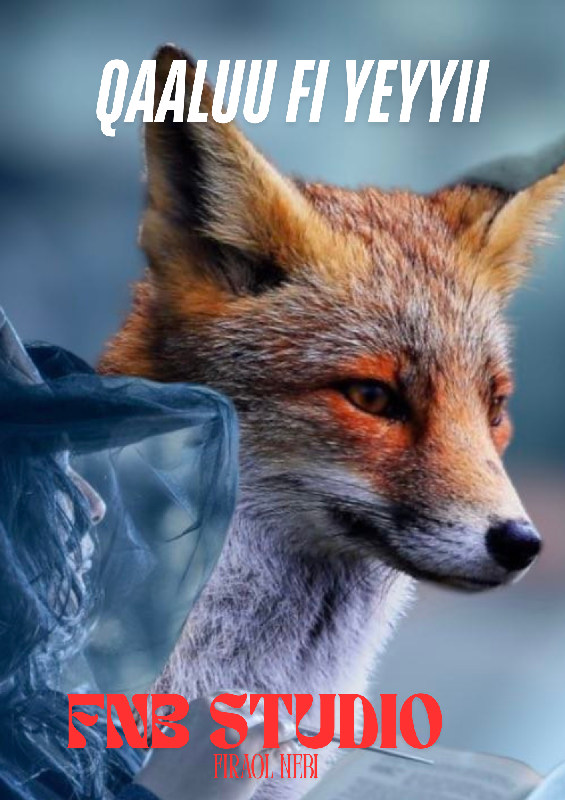

QAALLUU FI YEYYII!

Bara durii mootii biyya tokkootu ture. Mootiin kun waan gara fuulduraatti dhufu kan dubbatuuf jaarsa tokko qaba ture. Haata’u malee jaarsichi kun ni du’e. Mootiichis gara ilma jaarsichaatti ergaa erge. Ergaan mootichaas akkana jedha: “Yaa ilma Qaalluu, hojii abbaan kee naaf hojjeecha ture ni beekta. Kanaafis, waa’ee waggoota dhufaa jiranii natti himi.” jedheen. Ilmi jaarsichaa erga dhaamsa kana dhagahe booda akka abbaasaatti raaguu wallaluu isaatti baay’ee gaaddee masaraa mootichaatti qajeele. Utuu deemaa jiruu yeeyyin tokko itti dhufe akkana jedheen: “Yoo hoolota 50 naaf laatte, waan gara fuul duraatti dhufu sittin hima.” jedheen. Mucichi yaada yeyyii kanatti gammadee hoolota 50 isaaf laachuuf waadaa galeef. Kana booda yeeyyichi akkana jedhee waan dhufaa deemaa ittime: “Waggootiin dhufan kan abiddaa fi gubannaadhaati jedhii mootichatti himi” jedheen. Mucichis kanuma deemee mootichatti hime. Mootichis kana dhageenyaan hoolota 100 mucichaaf badhaasaan kenne. Yeyyichi hoolota waadaa galeef 50 akka kennuuf gara ilma qaallichaatti dhaamsa erge. Gaaruu, mucichi waadaa yeeyyiif seenee ture ni diige, abiddanis isa gubuuf ture. Waggaa sadii booda ammas mootichi ergaa kan biraa gara mucaa qallichaati erge. Mucichis erga dhaamsa mootichaa dhagahe booda hamma yeeyyicha argutti baay’ee dhiphate. Yeeyyichi ammas “hoolota 50 akka naa kennituu waadaa naaf seeni.” jedheen. Mucichis tole jedheen. Yeeyyichis “Waggootiin dhufaa jiran kan waraanaati.’’ jedheen. Mucichis kanuma mootichatti hime. Mootichi badhaasaan hoolota 200 mucichaaf erge. Garuu mucichi ammas hoolota 50 yeyyiif waadaa gale keennuufii dide. Mucichi hoolota 200 mooticharraa badhaafame gurguratee duroome. Ammas waggota sadii kan biraa booda mootichi ergaa kan biraa gara mucichaatti erge. Mucichi ammas utuu gara masaraatti deemuu yeeyyichi ammas itti dhufe. Mucichi yeyyichaaf hoolota 50 dabalataa fi 100 yeroo duraa waadaa galeefis akka kennuuf irra deebi'ee waadaa galuun ammas waan dhufaa deemaa akka ittimu yeyyicha gaafate. Garuu yeyyichi "nama yeroo lama sobee maafan amana? Kan yeroo tokko kijibe yoomiyyuu ni kijiba." jedheen. Mucichi ni kadhate, garuu yeyyichi didee biraa baqate. Mucichi mootichatti dhaqee "waggootiin dhufan kan nagayaati." jedheen. Mucichi hoolota 200 ammas mooticharraa argatee durummaa dabalatee gammadaa gara mana isaatti qajeele. Garuu barri inni raage kan nagayaa otuu hintaane kan lolaa tahe. Mootichis soba mucichaatti dallanuu dhaan waraana isaa gara mucichaatti erguu dhaan qabeenya isaa hunda irraa fudhachiisee isas gara mana hidhaatti galchan. Yeyyiin dhugaa dubbate. Mootichi qabeenya mucichaa hunda yeyyii kennee mucichi hiyyummatti hafe. Namni sana booda isa amanus ni dhabame.
Sareenis “Hin alaakin! waraabessi yammuu sagaleekee dhaga’u dhufee si nyaata” jedhee akeekkachiise. Harreen garuu didee alaake. Achii booda waraabessi sagalee harree dhaga’ee barbaacha laga keessa figuutti ka’e. Ammas Harreen marga nyaatee waan quufeef “Saree, ishee kana qofa anaaf heeyyami nan alaakaa” jedhe. Sareenis “lakkii dhiisi ani sodaadheera hin Alaakiin” jedhee dide. Harreenis hima Saree dhaga’uu didee alaakee, yammuu inni ofirra garagalu waraabessi, “Harree, sagaleekee dhaga’ee sii barbaadaan ture edaa ati as jirtaa!” jedhee utaalee morma Harree qabatee ajjeeseen.
Waraabessi kun foon harree nyaatee quufee yammuu oljedhu Saree arge. “ati immoo asii maal hoojjettaa?” jedhe, Sareenis Harree wajjin mana jiraatanii ba’aanii baduu isaaniifi hojiin isaas mana eeguu akka ture ittii hime. Achii booda waraabessis, “Mee kottu foon kana anaaf eegi deebi’een dhufaatii” jedhee foon Harree nyaatee isa iraa hafe lakkaa’ee itti kennatee adeeme. Xiqqoo turees, waraabessi foon isaa irraa fudhatee yammuu ilaalu sammuun Harree keessa hin jiru. Waraabessis, “Eessa geessite sammuu Harree kanaa?” jedhee dheekkamee gaafate. Sareenis “Obbo Waraabesso, Harreen kun sammuu qabaatee hin beeku durumaa jalqabee sammuu hin qabu. Utuu sammuu qabaatee immoo silaa manaa ana hin baasu ture!” jedhee mana namichaatti deebi’ee jedhama.